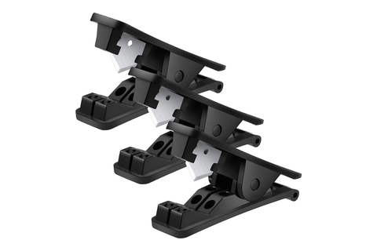
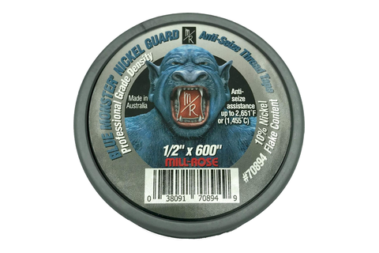

Plastic tube + fittings
every 1/4″ OD LLDPE run, every collet, every NPT joint in the machine
Tool station · 11/13Kitchen edition
Two joints, both closed by hand. A
push-to-connect is a square cut, a push past the collet to the tube stop, and
a tug — the tug is what sets the teeth. An NPT joint is tape wound the way
the thread drives, then snug + 1 turn with the wrench
backed up on the mating hex. Nothing here goes to a torque figure; every joint
is witnessed instead.
Tube
1/4″ OD LLDPE
Cutter
Mudder square cut
Tape
Millrose 70894
Witness
tug + tape ≤ half
Joint
Made with
Closes when
What it is really for
Square cutFU-01 · IP-03
Mudder cutter
one squeeze, no chamfer
Both ends square and burr-free — the umbilical's
1900 mm and 1540 mm tubes,
28 manifold segments off the reel
factory length carries 350 mm of installer trim per tube
The O-ring seals on the tube's side wall. A scarred or ovalled end
weeps.
Push-to-connectGT-02 · CC-12 IP-01/02/05
The fitting's own collet
John Guest black PP
Pushed past the collet's grip and the O-ring, bottomed on the tube stop,
then tugged back
release only square — a tilted collet chews the wall, and that end is re-cut
The tug is the connection. An un-tugged tube is resting, not held, and
90 PSI sits behind several of them.
NPTGT-01 · IP-01/02
Millrose tape
crescent wrench, backup on the hex
2–3 wraps clockwise into the thread, first
thread bare, then snug + 1 turn past hand-tight
tape stops by half the engagement — past half is a stress concentration
The taper seals; the PTFE is anti-seize and void-fill. Stainless on
stainless galls dry.
Barb + clampIP-02
SAE #6 316 SS
LOKMAN 10–16 mm on the vent
Past finger-tight on both pump stubs, tube pillowed at the band —
two clamps per stub, one over each barb
reinforced PVC, 15.9 mm bend radius, stretching to ~17 mm over a barb
The SeaFlo's barbs are moulded into its head casting. Nothing unscrews
— the stub is the only port it offers.
Order of work. CO2 first — dry, two NPT joints,
no soft hose. Then the water path, mixed barb and NPT and PTC. Then the
manifold: ten valves, eight junctions, 28 segments.
Risers last, once the enclosure is laid out around them.
The witness is the same three things at every joint,
and IP-06 walks them all again: tug held, tape at no more than half the
engagement and none at the mouth, clamp band pillowed. Zip-tie any span over
~6″.
One joint takes no tape. The PI4512F6S draws onto the
ASSE 1022's 3/8″ MFL outlet: a flat-faced
flare seal, a quarter turn past hand-tight, and the swivel turns, not the
body.
Have in hand

Mudder cutterPTFE / PE, 304 SS blade

Millrose 70894PTFE tape, nickel flake
Both joints seal on a side, never on an end —
the collet's O-ring on the tube wall, the NPT on its taper.